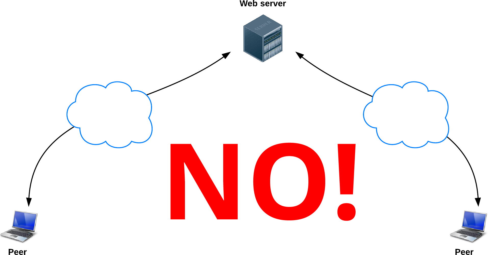
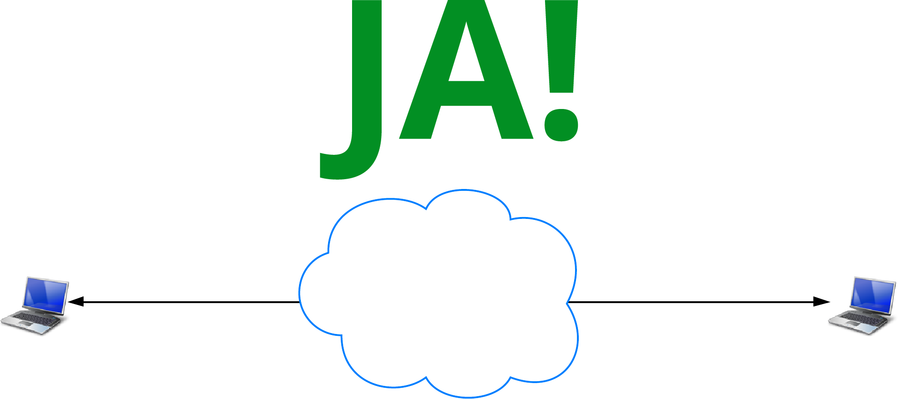

WebRTC is a new front in the long war for an open and unencumbered web
Real-time communication built into the browser
Open source, no plugins, free
Video, audio, data
High quality, low cost
Peer to peer


Shopping list
- Protocols for communication: IETF
- Standards for APIs: W3C
- Media and communication stack: libjingle, VP8, Opus...
- Design for a new communications ecosystem
WebRTC across platforms
- Chrome and Chrome for Android
- Firefox and Firefox for Android
- Opera
- Native Java and Objective-C bindings


Qt moving to Chromium
- Framework for cross-platform/device native and embedded apps
- Qt WebKit => Qt WebEngine
- Multimedia and new HTML5 features such as WebRTC working out-of the-box
1,000,000,000+
WebRTC Endpoints
Voice is just another JS application


What do we need for RTC?
Three main tasks
- Acquiring audio and video
- Communicating audio and video
- Communicating arbitrary data
Three main JavaScript APIs
- MediaStream (aka getUserMedia)
- RTCPeerConnection
- RTCDataChannel
MediaStream
Acquiring audio and video
What do we need?
- Streaming media:
MediaStream - Get local media:
navigator.getUserMedia()
MediaStream
- Represents a stream of audio and/or video
- Can contain multiple 'tracks'
- Obtain a MediaStream with
navigator.getUserMedia()

gUM
It's pretty simple.
var constraints = {video: true};
function successCallback(stream) {
var video = document.querySelector("video");
video.src = window.URL.createObjectURL(stream);
}
function errorCallback(error) {
console.log("navigator.getUserMedia error: ", error);
}
navigator.getUserMedia(constraints, successCallback, errorCallback);
gUM permissions
- HTTPS
- Chrome apps:
audioCaptureandvideoCapturepermissions - Chrome flag:
--use-fake-ui-for-media-stream - UI settings can be changed afterwards.

Constraints
- Mandatory or optional
- Resolution: width and height
- from a fixed list
- no cropping or scaling (yet)
- Frame rate
- Facing mode: front or back camera
- Source type: video camera, screen capture...
- Source id
- Volume
Facing mode, applyConstraints()
getUserMedia + Web Audio
// Success callback when requesting audio input stream
function gotStream(stream) {
var audioContext = new webkitAudioContext();
// Create an AudioNode from the stream
var mediaStreamSource = audioContext.createMediaStreamSource(stream);
// Connect it to the destination or any other node for processing!
mediaStreamSource.connect(audioContext.destination);
}
navigator.webkitGetUserMedia({audio:true}, gotStream);
Make sure to enable Web Audio Input in about:flags!
gUM screencapture
var constraints = {
video: {
mandatory: {
chromeMediaSource: 'screen'
}
}
};
navigator.webkitGetUserMedia(constraints, gotStream);
Media Stream Recording API
- Demo: simpl.info/mediarecorder
- Spec
- Chrome Intent to Implement
- Streams API
Media Stream Image Capture API
Demo- Spec
getFrame()creates anImageDataobject available inonframegrabtakePhoto()creates a Blob available inonphoto
RTCPeerConnection
Audio and video communication between peers
Communicate Media Streams

→
getUserMedia
+
RTCPeerConnection
←
getUserMedia
+
RTCPeerConnection
←

RTCPeerConnection does a lot
- Signal processing
- Codec handling
- Peer to peer communication
- Security
- Bandwidth management
...
WebRTC architecture

RTCPeerConnection initialisation
- Ascertain local media conditions: resolution, codec capabilities...
- Get potential network addresses for the application's host: candidates
Peer to peer — but we need servers :^\
What does WebRTC need servers for?
- Exchange metadata to coordinate communication: signaling
- Cope with NATs and firewalls: STUN and TURN
JSEP architecture

Signaling
- Need to exchange 'session description' objects:
- What media formats I support, what I want to send
- Network information for peer-to-peer setup
- Can use any messaging mechanism
- Can use any messaging protocol
- ...and can be used for application data
Signaling: how?
- Needs to be bidirectional
- Repeated polling: OK but not scalable
- HTTP request/response, but many hacks: long polling / Comet
- EventSource (aka Server-sent events): demo
- WebSocket:
- more natural solution — it's bidirectional!
- supported by all browsers that support WebRTC, desktop and mobile
- use TLS: for security and to avoid proxy problems
- for more information: see Ilya Grigorik's forthcoming O'Reilly chapter
- Peter Lubber's WebSocket Cheat Sheet
Signaling with Node and Socket.io
- Socket.io uses WebSocket with fallbacks
- Simple to exchange messages
- Built-in concept of 'rooms'
Find me a candidate
- Caller creates RTCPeerConnection object
- If success, callback passed IceCandidate
- Caller sends IceCandidate to callee
- Callee creates a new remote IceCandidate, adds to remote description
- Ping!
Make me an offer
- RTCPeerConnection creates offer
- Caller sends offer
- Callee receives offer
- RTCPeerConnection creates answer
- Callee sends answer
- Caller receives answer
- Ping!
An RTCSessionDescription
v=0 o=- 7614219274584779017 2 IN IP4 127.0.0.1 s=- t=0 0 a=group:BUNDLE audio video a=msid-semantic: WMS m=audio 1 RTP/SAVPF 111 103 104 0 8 107 106 105 13 126 c=IN IP4 0.0.0.0 a=rtcp:1 IN IP4 0.0.0.0 a=ice-ufrag:W2TGCZw2NZHuwlnf a=ice-pwd:xdQEccP40E+P0L5qTyzDgfmW ...
Want to know what all this SDP gobbledygook actually means?
Take a look at the IETF examples.
Making the connection
RTCDataChannel
Bidirectional communication of arbitrary data between peers
Communicate arbitrary data

onreceivemessage = handle(data);
...
var myData = [
{
id: "ship1";
x: 24,
y: 11,
velocity: 7
},
....
]
send(myData);
→
RTCDataChannel
+
RTCPeerConnection
←
RTCDataChannel
+
RTCPeerConnection
←
onreceivemessage = handle(data);
...
var myData = [
{
id: "ship7";
x: 19,
y: 4,
velocity: 18
},
....
]
send(myData);

RTCDataChannel
- Same API as WebSockets
- Ultra-low latency
- Unreliable or reliable
- Secure
RTCDataChannel API
var pc = new webkitRTCPeerConnection(servers,
{optional: [{RtpDataChannels: true}]});
pc.ondatachannel = function(event) {
receiveChannel = event.channel;
receiveChannel.onmessage = function(event){
document.querySelector("div#receive").innerHTML = event.data;
};
};
sendChannel = pc.createDataChannel("sendDataChannel", {reliable: false});
document.querySelector("button#send").onclick = function (){
var data = document.querySelector("textarea#send").value;
sendChannel.send(data);
};
STUN and TURN
P2P in the age of firewalls and NATs
An ideal world

The real world

STUN
- Tell me what my public IP address is
- Simple server, cheap to run
- Data flows peer-to-peer
STUN

TURN
- Provide a cloud fallback if peer-to-peer communication fails
- Data is sent through server, uses server bandwidth
- Ensures the call works in almost all environments
TURN

ICE
- ICE: a framework for connecting peers
- Tries to find the best path for each call
- Vast majority of calls can use STUN (webrtcstats.com):

Deploying STUN/TURN
- stun.l.google.com:19302
- WebRTC stunserver, turnserver
- rfc5766-turn-server
- VM image for Amazon Web Services
- restund
Security
Security throughout WebRTC
- Mandatory encryption for media and data
- Secure UI, explicit opt-in
- Sandboxed, no plugins
- WebRTC Security Architecture
Secure pathways

Architectures
Peer to peer: one-to-one call

Mesh: small N-way call

Star: medium N-way call

MCU: large N-way call

Beyond browsers
Phones and more
Telephony
Tethr

Building a WebRTC app
chrome://webrtc-internals

adapter.js
Lets you use the same code in all browsers:
- Removes vendor prefixes
- Abstracts Chrome/Firefox differences
- Minimizes effects of spec churn
This is doing my head in.
JavaScript frameworks
- Video chat:
- Peer-to-peer data:
SimpleWebRTC
Easy peer-to-peer video and audio
var webrtc = new WebRTC({
localVideoEl: 'localVideo',
remoteVideosEl: 'remoteVideos',
autoRequestMedia: true
});
webrtc.on('readyToCall', function () {
webrtc.joinRoom('My room name');
});
PeerJS
Easy peer-to-peer data
var peer = new Peer('someid', {key: 'apikey'});
peer.on('connection', function(conn) {
conn.on('data', function(data){
// Will print 'hi!'
console.log(data);
});
});
// Connecting peer
var peer = new Peer('anotherid', {key: 'apikey'});
var conn = peer.connect('someid');
conn.on('open', function(){
conn.send('hi!');
});
Services

More Information
- Justin Uberti: Google I/O presentation video
- Cullen Jennings video: HTML5 WebRTC
- HTML5 Rocks:
- ...and a book: webrtcbook.com
Contact Us
WebRTC and HTML5 could enable the same transformation for real-time communications that the original browser did for information.
<Thank You!>